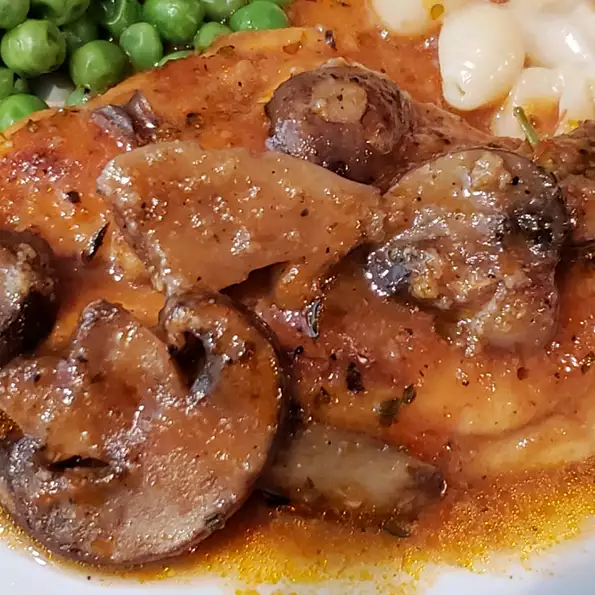

Chicken in a Pot
This dish uses just one skillet to prepare. Quick, easy and delicious.
Tomato paste and chicken broth combine to make a tasty sauce. Garnish with fresh parsley.
Ingredients
- ¾ cup chicken broth
- 1½ tablespoons tomato paste
- ¼ teaspoon ground black pepper
- ½ teaspoon dried oregano
- In a medium bowl, combine the broth, tomato paste, ground black pepper, oregano, salt and garlic. Mix well and
set aside.
- Dredge the chicken in the bread crumbs, coating well. Heat the oil in a large skillet over medium high heat.
Saute the chicken in the oil for 2 minutes per side, or until lightly browned.
- Add the reserved broth mixture and the mushrooms to the skillet and bring to a boil. Then cover, reduce heat to
low and simmer for 20 minutes. Remove chicken and set aside, covering to keep it warm.
- Bring broth mixture to a boil and cook for 4 minutes, or until reduced to desired thickness. Spoon sauce over
the chicken and serve.